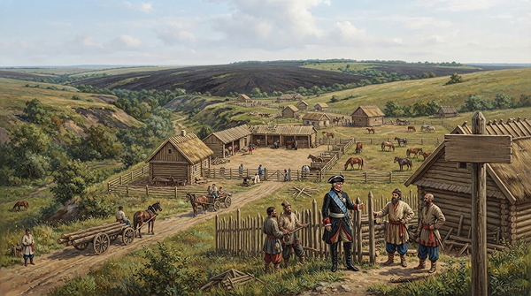

1782: Заснування поселення
Історія заснування цих земель сягає кінця XVIII століття (орієнтир — 1782 рік), коли за розпорядженням Новоросійської губернії у верхів'ї балки Липняжі було відведено землі капітану Олександру Карбовському під зведення хутора та кінного заводу. Спочатку поселення мало назви Червоне Поле або Красне, але згодом закріпилася сучасна назва — Карбівка, утворена від прізвища першого власника-поміщика. Наприкінці XIX століття завдяки родючим чорноземам хутір розрісся до повноцінного села, основу економіки якого становили землеробство та скотарство.